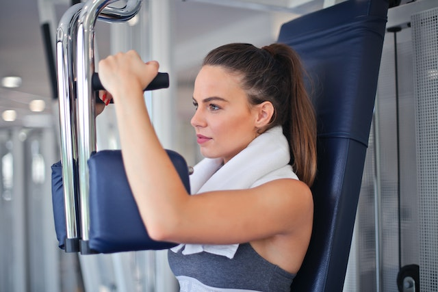
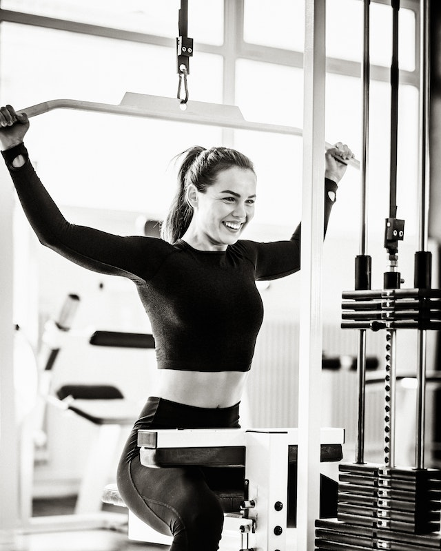
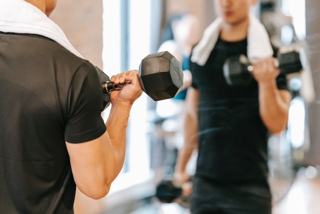

The human body can be broken down into different muscles and muscle groups, which can be worked and strengthened by exercise. This table shows major muscles and the exercises used to work and strengthen that muscle.
Squat
The squat is performed by squatting down with a weight held across the upper back (below the neck) and standing up straight again. This is a compound exercise that also involves the glutes (buttocks) and, to a lesser extent, the hamstrings, calves, and the lower back. Lifting belts are sometimes used to help support the lower back. The freeweight squat is one of the three powerlifting competition exercises, along with the deadlift and the bench press.[
Equipment
Squats can be performed using only the practitioner's body weight. For weighted squats, a barbell is typically used, although the practitioner may instead hold dumbbells, kettlebells, or other weighted objects. Individuals uncomfortable performing freeweight squats may use a Smith machine or hack squat machine
Deadlift

The deadlift is performed by lifting a weight off of the floor until fully upright. This is a compound exercise that also involves the glutes, lower back, lats, trapezius (upper back), and, to a lesser extent, the quadriceps and the calves. Lifting belts are often used to help support the lower back. If performed with a barbell, it can be held with both hands facing backwards or with one hand facing backward and one facing forward. Both hands should not face forwards because this puts excess stress on the inner elbows.
Upper body
Pectorals
The bench press or dumbbell bench-press is performed while lying face up on a bench, by pushing a weight away from the chest. This is a compound exercise that also involves the triceps and the front deltoids, also recruits the upper and lower back muscles, and traps. The bench press is the king of all upper body exercises and is one of the most popular chest exercises in the world. It is the final exercise in 'The big 3'.
Major variants: incline ~ (more emphasis on the upper pectorals), decline ~ (more emphasis on the lower pectorals), narrow grip ~ (more emphasis on the triceps), push-up (face down using the body weight), neck press (with the bar over the neck, to isolate the pectorals), vertical dips (using parallel dip bars) or horizontal dips (using two benches with arms on the near bench and feet on the far bench, and dropping the buttocks to the floor and pushing back up.)
Lats
The pulldown is performed while seated by pulling a wide bar down towards the upper chest or behind the neck. This is a compound exercise that also involves the biceps, forearms, and the rear deltoids.
The Pull-up is performed by hanging from a chin-up bar above head height with the palms facing forward (supinated) and pulling the body up so the chin reaches or passes the bar. The pull-up is a compound exercise that also involves the biceps, forearms, traps, and the rear deltoids. A chin-up (palms facing backwards) places more emphasis on the biceps and a wide grip pullup places more emphasis on the lats. As beginners of this exercise are often unable to lift their own bodyweight, a chin-up machine can be used with counterweights to assist them in the lift.
Deltoids (Shoulder Press)

The shoulder press is performed while seated, or standing by lowering a weight held above the head to just above the shoulders, and then raising it again. It can be performed with both arms, or one arm at a time. This is a compound exercise that also involves the trapezius and the triceps.
The military press is similar to the shoulder press but is performed while standing with the feet together. (It is named "military" because of the similarity in appearance to the "at attention" position used in most militaries) Unlike the seated shoulder press, the military press involves the majority of the muscles of the core as stabilizers to keep the body rigid and upright, and is thus a more effective compound exercise.
Biceps
The Preacher curl is performed while standing or seated, with hands hanging down holding weights (palms facing forwards), by curling them up to the shoulders. It can be performed with both arms, or one arm at a time.